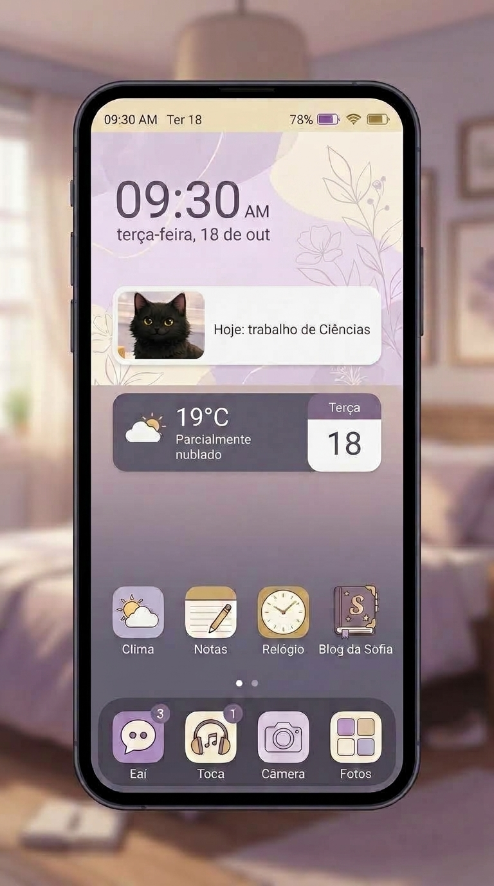

naquela noite
A Hora que Não Existe
Mei já tinha aprendido duas coisas sobre a Hora Ausente.
A primeira: não confiar nos relógios.
A segunda: nunca seguir alguém que soubesse o seu nome.
Por isso, quando ouviu:
— Mei.
continuou andando.
A rua estava vazia. As vitrines permaneciam acesas, mas não havia ninguém atrás delas. Nenhum carro passava. Nenhuma janela se abria.
— Mei.
Dessa vez, a voz veio mais perto.
Ela apertou a lanterna contra o peito e apressou o passo.
Então ouviu:
— Você deixou uma coisa do outro lado.
Mei parou.
Não deveria ter parado.
Eu sabia que ela não devia parar.
veio dentro da edição
Não é uma coleção
Uma cartela de adesivos. O tipo de coisa que uma pessoa guarda por motivos estritamente documentais.
Toque para registrar em “Não é uma Coleção”.
BZZ.
o celular vibrou
Um aplicativo que não estava ali antes.

Eu não instalei isso.
Também não faço ideia de como se pronuncia.
Então, obviamente, eu abri.
ἀρχή
INCOMPATIBILIDADE DETECTADAQuatro princípios.
Quatro maneiras de explicar a realidade.